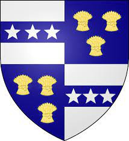

375557 Lady Margaret Stewart (Grevinna av Sutherland)
* 1373 Lochindorb castle, Badenoch, Scotland
† 1439 Trieve castle, Galloway, Wigtonshire, Scotland
Grevinna
Blev högst 66 år
* 1373 Lochindorb castle, Badenoch, Scotland
† 1439 Trieve castle, Galloway, Wigtonshire, Scotland
Grevinna
Blev högst 66 år
751114 Earl of Buchan Alexander Stuart
* omkring 1343 Dundonald, Ayrshire, Scotland
† 1406-04-04 Dundonald, Ayrshire, Scotland
Blev ca 63 år
* omkring 1343 Dundonald, Ayrshire, Scotland
† 1406-04-04 Dundonald, Ayrshire, Scotland
Blev ca 63 år

751110 Kung Robert II (Stuart) of Scotland
* 1316-03-02
† 1390 Dundonald, Ayrshire, Scotland
Kung av Scotland
Blev högst 74 år
* 1316-03-02
† 1390 Dundonald, Ayrshire, Scotland
Kung av Scotland
Blev högst 74 år
1502220 High Steward Walter Stewart
* omkring 1296 Bathgate castle, Scotland
† 1327-04-09 Bathgate castle, Scotland
6th High Steward of Scotland, Baron
Blev ca 31 år
* omkring 1296 Bathgate castle, Scotland
† 1327-04-09 Bathgate castle, Scotland
6th High Steward of Scotland, Baron
Blev ca 31 år

1502221 Princess Marjorie Bruce
* 1296 Dundonald Castle, Ayrshire, Scotland
† 1316-03-02 Paisley, Scotland
Prinsessa av Scotland
Blev högst 20 år
* 1296 Dundonald Castle, Ayrshire, Scotland
† 1316-03-02 Paisley, Scotland
Prinsessa av Scotland
Blev högst 20 år

1502229 Queen Elizabeth Mure of Scotland
* 1320 Rowallan castle, Scotland
† 1355 Paisley Abbey, Scotland
Drottning
Blev högst 35 år
* 1320 Rowallan castle, Scotland
† 1355 Paisley Abbey, Scotland
Drottning
Blev högst 35 år

3004458 Lord Adam Mure IV of Rowallan
* 1290 Rowallan, Killmarnock, Scotland
† omkring 1330 Kilmarnock, Scotland
Lord av Rowallan, Riddare
Blev ca 40 år
* 1290 Rowallan, Killmarnock, Scotland
† omkring 1330 Kilmarnock, Scotland
Lord av Rowallan, Riddare
Blev ca 40 år

3004459 Lady Joanna Danzielstour
* omkring 1296 Kilmarnock, Scotland
† 1330 Renifrewshire, Scotland
Blev ca 34 år
* omkring 1296 Kilmarnock, Scotland
† 1330 Renifrewshire, Scotland
Blev ca 34 år
751115 Lady Mariota "Margaret" Athyn Mckay
* omkring 1350 Strathnaver, Sutherland, Scotland
† omkring 1402 Scotland
Blev ca 52 år
* omkring 1350 Strathnaver, Sutherland, Scotland
† omkring 1402 Scotland
Blev ca 52 år
1502230 Iye Mackay of Strathnaver